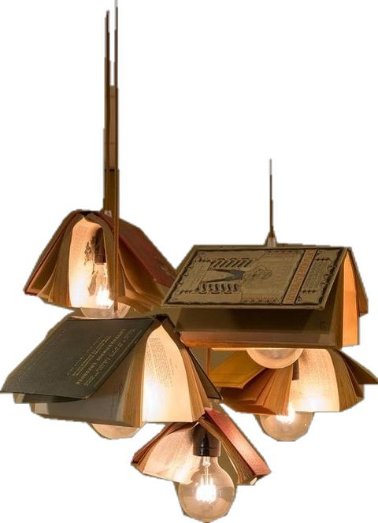
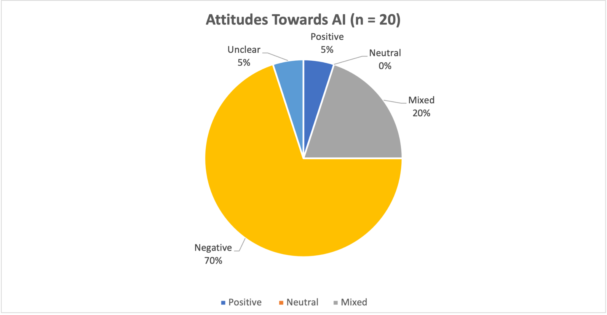

Week 06
Space for workshop work
Biying Xian Personal Portfolio
A collection of things I’m learning, making, and noticing.

01 / A little introduction
Hello! I am currently pursuing an MA in Digital Media at the University of Leeds.
I am particularly interested in digital communication, media culture, and the relationship between technology and society.
I completed my BA in Cultural and Media Studies at the University of Leeds, graduating with Upper Second-Class Honours (2:1).
During my undergraduate studies, I developed a strong foundation in media theories, cultural studies, and critical analysis.
My studies encouraged me to explore how media shapes social values, cultural identities, and everyday practices.
My passion for digital media and communication has driven me to explore new technologies and their implications for society. I am eager to continue learning and contributing to the field through my MA studies and future career endeavors.
Beyond academic learning, I also developed practical skills in content creation, visual communication, and digital design. These experiences inspired me to further explore digital media at postgraduate level.
02 / Learning & exploring
As part of my MA Digital Media programme, I am exploring different perspectives on digital technologies, media, communication, and contemporary society.
03 / Beyond the classroom
I am also interested in current affairs, digital content creation, and visual storytelling. I enjoy discovering new perspectives and learning about the world through different forms of media.
04 / People & practice
Alongside my studies, I have participated in student organisations, volunteering activities, and professional work experiences.
I have been actively involved in student organisations, where I have developed leadership, teamwork, and communication skills. These experiences have allowed me to engage with diverse communities and contribute to meaningful initiatives.
I have volunteered with Leeds Hospitals Charity, supporting daily activities in its staff shop. I have also participated in community health awareness activities.
My professional experiences include English teaching support, educational sales, and digital content operations. These roles have helped me develop communication, organisational, and problem-solving skills.
05 / Notes along the way
Digital Practice · Weeks 02–06
During the workshop held in the second week, I learned two methods for creating my own website. The first was CampusPress, the university's website platform, which involved a relatively straightforward process; the second was Visual Studio Code, which allows you to create your own web pages using the provided basic code and offers greater flexibility.
I opted for the second method because I wanted to try building a portfolio website with greater freedom using code.
The main task this time was to create a basic web page cover,
including some of my personal details. In class, we mainly
learnt how to create two files—index.html and a
CSS file—and save them in a single folder. We also edited
the text on the website based on the provided starter code.
The CSS file contained code to stylise the website, such as fonts, colours, typography, spacing and page layout.
Throughout this step-by-step learning process, I primarily gained practical experience of the process of building a website from scratch.
Furthermore, as discussed by Gillespie, websites digitise information from the real world through indexes and data, with almost all public activities being extensively recorded and archived (2014, p. 170).
This reveals that users' actions whilst browsing websites are stored, and that there are differing interpretations regarding data collection and the boundaries of the public sphere.
During the third week's workshop, I was introduced to web scraping and learned how to use the Web Scraper extension to collect information from BBC iPlayer and export it into a CSV file. This helped me understand how information presented on websites can be transformed into data for further analysis.
However, I noticed that the exported data was not always well-organised or complete. Some smaller sections of the webpage were difficult to capture accurately, which made the collected information appear somewhat messy. Compared with traditional paper documents, digital information is often organised in ways that make automated collection easier, but it is not necessarily as structured as an Excel spreadsheet.
This experience reminded me of Venturini and Rogers (2025, p. 81), who explain that digital information is organised according to the needs of its creators and platforms rather than those of academic researchers. Their argument helped me understand why information that appears organised on a website may not be directly suitable for research purposes.
Although web scraping can make data collection more efficient, I realised that automated tools cannot completely replace researchers' judgement. Researchers still need to examine the accuracy and completeness of collected data. As this workshop was mainly an introduction to the software, I hope to develop a better understanding of how to collect and organise more complex digital data in the future.
Venturini, T. and Rogers, R. (2025) Digital Methods: A Short Introduction. Cambridge: Polity Press. Chapter 6, 'Scraping Documents and Interfaces'.
During this week's workshop, our group created a dataset to explore university students' use of generative AI and their attitudes towards it. As AI continues to develop rapidly, we wanted to understand how students experience and respond to these technologies.
We chose Reddit because of its large user base and opportunities for open discussion. Its voting system also allowed us to observe user interactions. To capture different perspectives, we developed detailed categories, including positive, negative, neutral and mixed attitudes.
However, while collecting 20 posts, I noticed that negative opinions appeared more frequently. This made me question how representative our data was. People who have used AI or hold strong opinions may be more willing to share their experiences, while students who do not use AI or rarely participate in online discussions may be overlooked.
This connects to D'Ignazio and Klein's (2020) What Gets Counted Counts, which highlights the relationship between data, classification and power. I realised that data is not entirely neutral. Reddit's community categories and voting mechanisms can influence which discussions become visible, while our own coding decisions also shape how different opinions are represented. Consequently, some voices may receive greater attention while others remain underrepresented.
Reflecting on this experience, I recognised the limitations of our small sample and the lack of a clear time frame. If I repeated this research, I would establish a more specific time range, expand the dataset and consider additional sources to capture a wider range of perspectives.
D'Ignazio, C. and Klein, L.F. (2020) 'What Gets Counted Counts'. In: Data Feminism. Cambridge: MIT Press, pp. 97–123.
During this week's workshop, we continued working with the dataset collected in Week 4 and learned how to use Excel to create data visualisations, including bar charts and pie charts. I found this particularly useful because when a spreadsheet contains a large amount of information, it can be difficult to identify patterns simply by looking at numbers. Using different charts, colour contrasts and percentage labels makes the results more accessible and easier for audiences to understand. For example, we could visually present students' AI usage and attitudes, allowing viewers to recognise differences between categories more quickly.
This experience connects to Feigenbaum and Alamalhodaei's (2020) Visual Data Storytelling, which encouraged me to think critically about how data is organised and communicated through visual representations.
However, I also realised that visualisation can make data appear more convincing while potentially hiding its limitations. Although charts clearly present percentages, audiences may overlook the fact that our findings were based on only 20 Reddit posts, which cannot represent all university students.
More importantly, I began to recognise the relationship between data visualisation and power. The process of deciding what gets recorded, categorised and displayed is not entirely neutral. Researchers have the power to highlight certain information, while other perspectives may remain invisible. Therefore, I believe effective data visualisation should not only communicate findings clearly but also encourage audiences to recognise the limitations behind the data.
Feigenbaum, A. and Alamalhodaei, A. (2020) 'Visual Data Storytelling'. In: The Data Storytelling Workbook. Routledge.
Space for workshop work
06 / From the classroom
Exercises and experiments from my Digital Practice workshops.
I collected programme titles and categories from the BBC iPlayer homepage using Web Scraper.
Download dataset (CSV)Our group collected and coded 20 Reddit posts to explore how university students discuss their use of generative AI and their attitudes towards it.
I used Excel to visualise the attitudes recorded in our Week 4 dataset.
